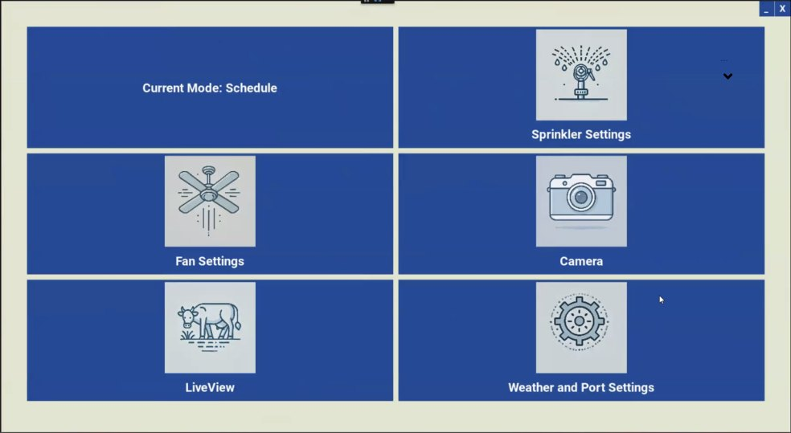
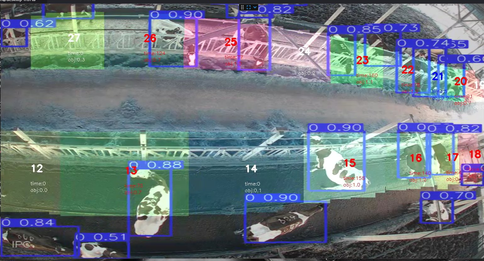
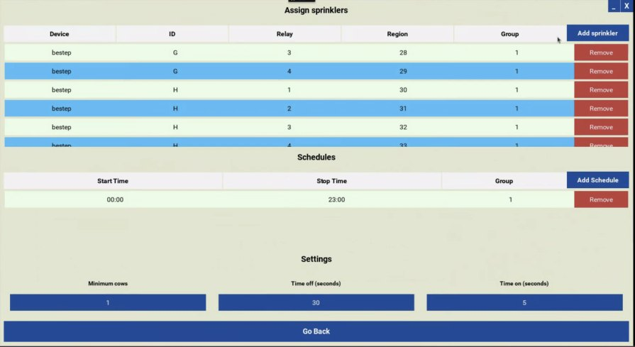

Context
BullsEye is BullTech’s camera and AI-based system for cooling dairy cows at the feed lane. A central computer processes camera data in real time and controls individual fans and sprinklers, activating cooling where cows are detected and adjusting the number of cooling cycles as needed. The system operates without tags attached to the cows.
The system was already in use when I joined the project. Its interface had been built by the developers, and the initial goal was to make it easier for farmers to access all cameras and check that they were working.
I worked with the product manager and developers on the UX specification and interface redesign. During our review, I proposed restructuring the navigation and bringing all technician settings together in one dedicated area.
The problem
The existing interface made routine monitoring unnecessarily complicated.
- Too many parameters on screen. Technical settings competed with the information farmers needed for everyday use.
- Indirect navigation. Users had to enter and exit screens to move between different parts of the system.
- Missing context. Farm and camera names were not consistently visible, making it difficult to identify the view on screen.
- Poor readability and visual consistency. Parameters were difficult to read over camera images, and the colors and icons lacked a unified visual language.
Rethinking the structure
The redesign needed to support two distinct tasks: checking cameras during everyday farm work and configuring the system during technical service.
I proposed a consistent layout with persistent navigation, visible farm information and a central area where the screen content would change. This would give users direct access to the main screens while keeping their context visible.
I also proposed gathering all technician settings in one password-protected area. This would give technicians a clear place to find their controls and keep detailed configuration separate from farmers’ daily monitoring.
Design decisions
- Persistent navigation
- A fixed sidebar on the left provides direct access to the main screens. Users can move between them without repeatedly returning to a previous screen.
- A consistent frame
- Farm information and the company logo remain visible around the central content area. Each camera view also displays its name, helping users identify what they are looking at.
- Camera monitoring first
- A clear list of camera names provides access to each view. On the camera screen, the image takes priority, with cooling regions and timers displayed clearly over it. The image refreshes every 30 seconds.
- One place for technician settings
- Technical parameters are grouped in a dedicated, password-protected area. Technicians can find their settings in one place, while farmers’ everyday screens stay focused on monitoring.
- A unified visual language
- I introduced the company’s brand colors and a consistent icon style, improved contrast over camera images and replaced the red styling previously used for buttons.
Before and after
Home screen

Camera view

Settings

Outcome
The redesigned interface was implemented. In follow-up conversations, farmers and farm owners using the system gave positive feedback and reported needing fewer explanations from the service team.
The new interface provides direct access to the main screens, keeps farm and camera context visible, and brings technician settings together in one dedicated area.